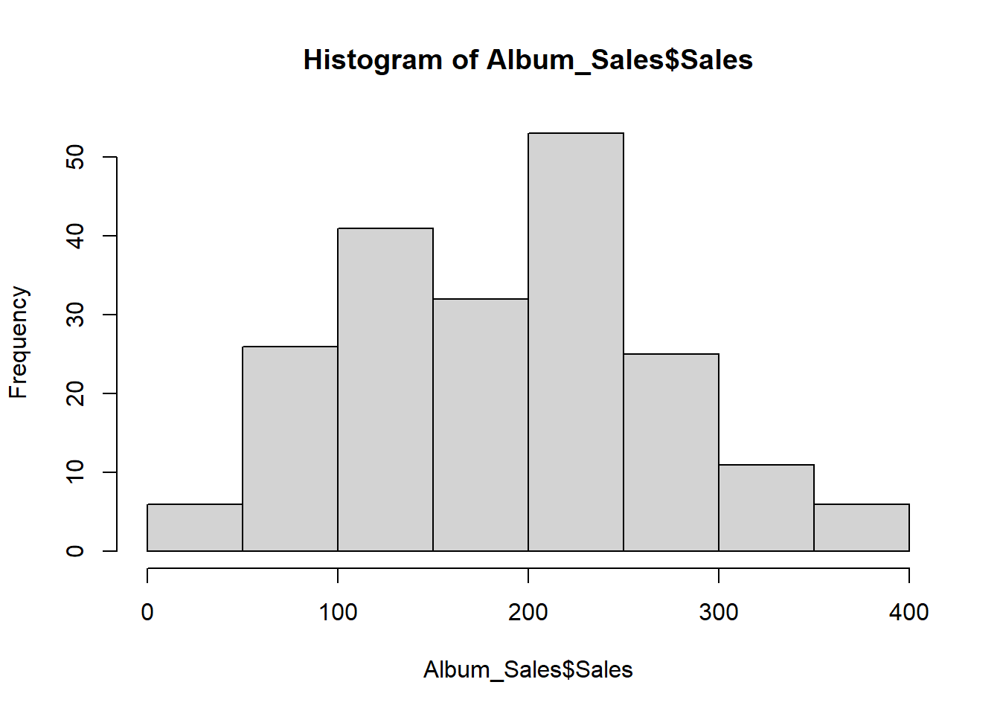

Topic 5 Exploratory and descriptive analysis with R
5.1 Working example - record sales data
Let’s import the data
## Parsed with column specification:
## cols(
## Adverts = col_double(),
## Sales = col_double(),
## Airplay = col_double(),
## Attract = col_double(),
## Genre = col_character()
## )Let’s look at the data
## # A tibble: 6 x 5
## Adverts Sales Airplay Attract Genre
## <dbl> <dbl> <dbl> <dbl> <chr>
## 1 10.3 330 43 10 Country
## 2 986. 120 28 7 Pop
## 3 1446. 360 35 7 HipHop
## 4 1188. 270 33 7 HipHop
## 5 575. 220 44 5 Metal
## 6 569. 170 19 5 Country5.2 Let’s make sure our data types are correct #1
- This variable is currently stored as charcters, not as a factor / category variable
## chr [1:200] "Country" "Pop" "HipHop" "HipHop" "Metal" "Country" "Pop" "Pop" "Metal" ...- We can save it as a factor
## Factor w/ 4 levels "Country","HipHop",..: 1 4 2 2 3 1 4 4 3 2 ...5.3 Measures of central tendency
The main measures of central tendency are: - Mean - Median - Mode
5.3.2 Trimmed mean
- The trimmed mean is used to reduce the influence of outliers on the summary
## [1] 192.66675.4 Measures of dispresion or variance
5.4.1 Range
The range is the difference between the lowest and highest values
- You can calculate it using these values
## [1] 63- Or you can use the range command to get the min and max values in one go
## [1] 0 635.4.2 Interquartile range
- We know that the median is the “middle” of the data = 50th percentile
- The interquatile range is the difference between the values at the 25th and 75th percentiles
## 25% 75%
## 19.75 36.00- Interquartile range = 36 - 19.75 = 16.25
Sum of squares
- The difference between each value and the mean value, squared, and then summed together
## [1] 469363355.4.3 Variance
- Variance: Sum of sqaures divided by n-1
5.5 Skewness and Kurtosis
5.5.1 Assessing skewness of distribution #1
- It is possible to use graphs to view the distribution
- We will focus on graphic presentation of data next week

5.5.2 Assessing skewness of distribution #2
- We can check raw skewness value using the skew() command in the psych package
##
## Attaching package: 'psych'## The following object is masked from 'package:car':
##
## logit## The following objects are masked from 'package:ggplot2':
##
## %+%, alpha## [1] 0.04327295.5.3 Kurtosis
| informal term | technical name | kurtosis value |
|---|---|---|
| “too flat” | platykurtic | negative |
| “just pointy enough” | mesokurtic | zero |
| “too pointy” | leptokurtic | positive |
## [1] -0.71573395.6 Getting and overall summary
5.6.1 summary() - in “base R”
## Adverts Sales Airplay Attract Genre
## Min. : 9.104 Min. : 10.0 Min. : 0.00 Min. : 1.00 Country:46
## 1st Qu.: 215.918 1st Qu.:137.5 1st Qu.:19.75 1st Qu.: 6.00 HipHop :53
## Median : 531.916 Median :200.0 Median :28.00 Median : 7.00 Metal :48
## Mean : 614.412 Mean :193.2 Mean :27.50 Mean : 6.77 Pop :53
## 3rd Qu.: 911.226 3rd Qu.:250.0 3rd Qu.:36.00 3rd Qu.: 8.00
## Max. :2271.860 Max. :360.0 Max. :63.00 Max. :10.005.6.2 describe() - in the “psych” package #1
## vars n mean sd median trimmed mad min max range skew kurtosis se
## Adverts 1 200 614.41 485.66 531.92 560.81 489.09 9.1 2271.86 2262.76 0.84 0.17 34.34
## Sales 2 200 193.20 80.70 200.00 192.69 88.96 10.0 360.00 350.00 0.04 -0.72 5.71
## Airplay 3 200 27.50 12.27 28.00 27.46 11.86 0.0 63.00 63.00 0.06 -0.09 0.87
## Attract 4 200 6.77 1.40 7.00 6.88 1.48 1.0 10.00 9.00 -1.27 3.56 0.10
## Genre* 5 200 2.54 1.12 3.00 2.55 1.48 1.0 4.00 3.00 -0.02 -1.37 0.085.6.3 describe() - in the “psych” package #2
- We can describe by factor variables
##
## Descriptive statistics by group
## group: Country
## vars n mean sd median trimmed mad min max range skew kurtosis se
## Adverts 1 46 656.22 507.96 574.14 620.40 581.96 9.1 1985.12 1976.01 0.51 -0.65 74.89
## Sales 2 46 201.74 73.64 210.00 200.79 66.72 60.0 360.00 300.00 0.03 -0.52 10.86
## Airplay 3 46 29.07 10.53 28.00 28.50 11.12 9.0 54.00 45.00 0.44 -0.10 1.55
## Attract 4 46 6.52 1.63 7.00 6.71 1.48 1.0 10.00 9.00 -1.49 3.54 0.24
## Genre* 5 46 1.00 0.00 1.00 1.00 0.00 1.0 1.00 0.00 NaN NaN 0.00
## ------------------------------------------------------------------------
## group: HipHop
## vars n mean sd median trimmed mad min max range skew kurtosis se
## Adverts 1 53 606.32 452.84 601.43 568.33 501.36 10.65 2000 1989.35 0.70 0.05 62.20
## Sales 2 53 199.62 92.71 200.00 200.70 103.78 10.00 360 350.00 -0.10 -0.91 12.74
## Airplay 3 53 28.09 13.86 30.00 28.33 14.83 0.00 55 55.00 -0.14 -0.83 1.90
## Attract 4 53 6.96 1.13 7.00 7.00 1.48 3.00 9 6.00 -0.80 2.03 0.15
## Genre* 5 53 2.00 0.00 2.00 2.00 0.00 2.00 2 0.00 NaN NaN 0.00
## ------------------------------------------------------------------------
## group: Metal
## vars n mean sd median trimmed mad min max range skew kurtosis se
## Adverts 1 48 693.45 534.06 593.0 640.19 521.34 45.3 2271.86 2226.56 0.92 0.21 77.08
## Sales 2 48 197.71 75.18 200.0 198.25 88.96 40.0 340.00 300.00 -0.07 -0.94 10.85
## Airplay 3 48 27.96 11.37 27.5 28.00 11.12 2.0 57.00 55.00 0.02 -0.26 1.64
## Attract 4 48 6.85 1.34 7.0 6.90 1.48 2.0 9.00 7.00 -0.84 1.74 0.19
## Genre* 5 48 3.00 0.00 3.0 3.00 0.00 3.0 3.00 0.00 NaN NaN 0.00
## ------------------------------------------------------------------------
## group: Pop
## vars n mean sd median trimmed mad min max range skew kurtosis se
## Adverts 1 53 514.63 446.04 429.5 453.85 438.01 15.31 1789.66 1774.35 1.01 0.27 61.27
## Sales 2 53 175.28 77.92 160.0 171.86 88.96 40.00 360.00 320.00 0.34 -0.67 10.70
## Airplay 3 53 25.13 12.75 26.0 25.02 11.86 1.00 63.00 62.00 0.25 0.46 1.75
## Attract 4 53 6.72 1.47 7.0 6.81 1.48 1.00 9.00 8.00 -1.11 2.51 0.20
## Genre* 5 53 4.00 0.00 4.0 4.00 0.00 4.00 4.00 0.00 NaN NaN 0.005.7 Basic statistical tests (more detail in later sections)
5.7.1 Corrleation
“Is there a relationship between advert spend and sales?”
- We would use an correlational analysis to answer this question
“Is there a relationship between advert spend and sales?”
- We would use an correlational analysis to answer this question
##
## Pearson's product-moment correlation
##
## data: Album_Sales$Sales and Album_Sales$Adverts
## t = 9.9793, df = 198, p-value < 2.2e-16
## alternative hypothesis: true correlation is not equal to 0
## 95 percent confidence interval:
## 0.4781207 0.6639409
## sample estimates:
## cor
## 0.57848775.7.2 Tests of difference - t-test
“Is there a significant difference in sales between the Country and Hip-hop musical genres?”
- We would use a t-test to answer this question
myTtestData <- Album_Sales %>% filter(Genre == c("Country", "HipHop"))
t.test(myTtestData$Sales ~ myTtestData$Genre)##
## Welch Two Sample t-test
##
## data: myTtestData$Sales by myTtestData$Genre
## t = 0.80489, df = 40.62, p-value = 0.4256
## alternative hypothesis: true difference in means is not equal to 0
## 95 percent confidence interval:
## -27.80146 64.62904
## sample estimates:
## mean in group Country mean in group HipHop
## 216.0000 197.58625.7.3 Tests of difference - ANOVA
“Is there a significant difference in sales between all musical genres?”
- We would use an ANOVA to answer this question
## Df Sum Sq Mean Sq F value Pr(>F)
## Album_Sales$Genre 3 23530 7843 1.208 0.308
## Residuals 196 1272422 6492